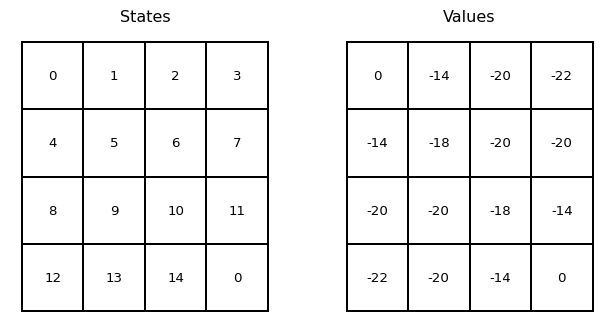
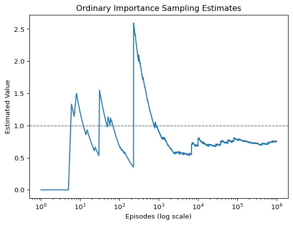
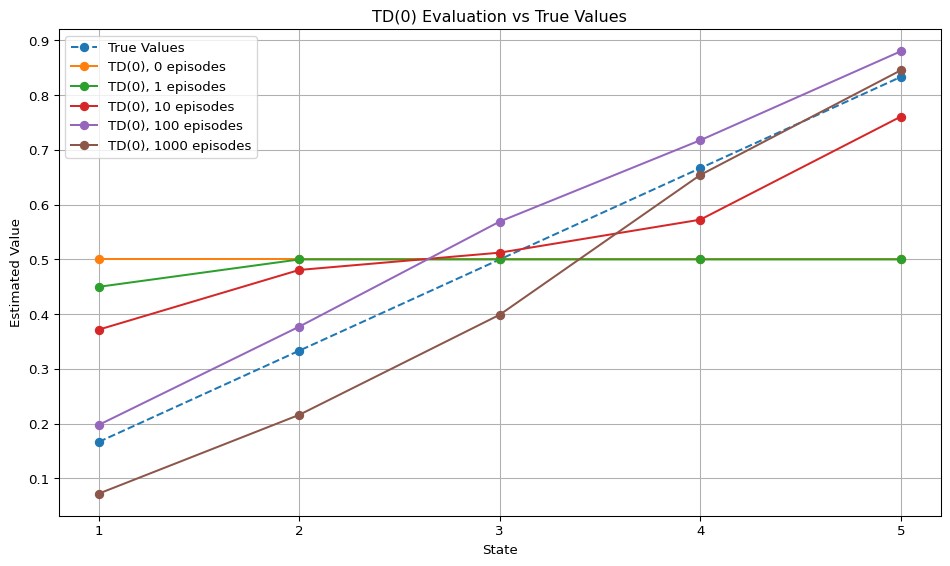
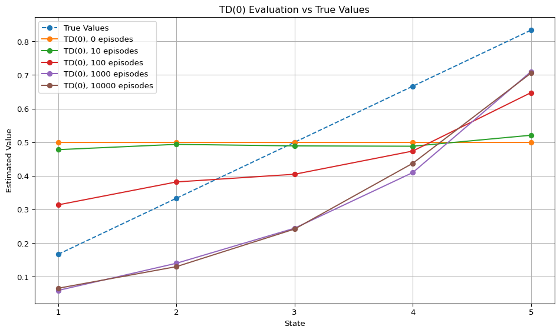
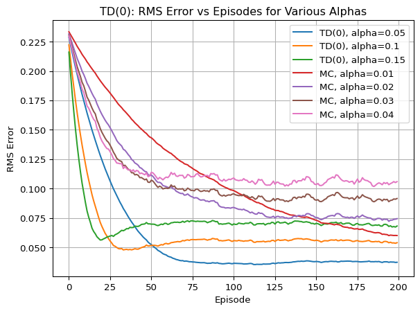
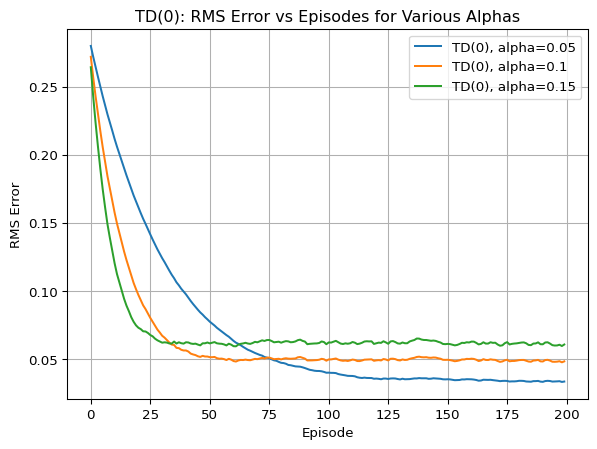
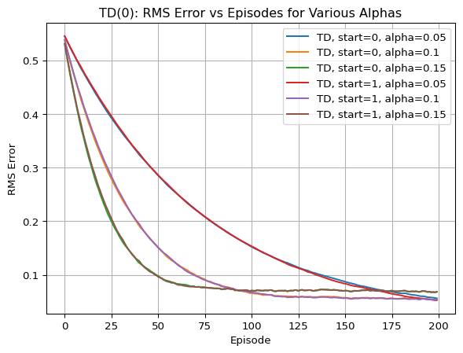

import ipywidgets as widgets
from IPython.display import display
import numpy as np
# Define the hidden "success" probabilities for the four arms
arm_probabilities = [0.2, 0.5, 0.7, 0.9]
# Label widget to show your reward messages
message_label = widgets.Label(value="Pull an arm to see your reward!")
# Create four buttons, one for each arm
buttons = [widgets.Button(description=f"Arm {i+1}") for i in range(4)]
text = widgets.Text(
value="Hello World",
placeholder="Type something",
description="String:",
disabled=False,
)
# Define the button click handler
def on_button_click(b):
arm_index = buttons.index(b)
reward = np.random.binomial(n=1, p=arm_probabilities[arm_index])
# Update the label's text instead of printing
text.value = f"You pulled Arm {arm_index+1} and got a reward of {reward}."
# Attach the click event to each button
for btn in buttons:
btn.on_click(on_button_click)
# Display the buttons and the label
display(widgets.VBox([widgets.HBox(buttons), text]))Notes on Reinforcement Learning
Foundations
Given a discrete probability space \((\Omega, p)\) and a ranom variable, it’s expectation is \[ \mathbb{E}[X] := \sum_{\omega \in \Omega} X(\omega) p(\omega) \]
Theorem 1 (This needs a proper name) The expected value of \(X\) can be computed from its probability mass function \(p_X(x) := p(X = x)\) via \[ \mathbb{E}[X] = \sum_{x \in \mathbb{R}} x \cdot p_X(x) \] (note that \(p_X(x) > 0\) for only countabley many \(x\))
When applying a real valued function \(f\) to a random variable we get another random variable and we can compute its expected value by \(\mathbb{E}[f(X)] = \sum_{x \in \mathbb{R}} f(x) \cdot p_X(x)\) This is true because \(p (f(X) = x) = \sum_{y \in \mathbb{R}} 1_{f(y) = x} \cdot p(X = y)\) and thus \[ \begin{split} \mathbb{E}[f(X)] &= \sum_{x \in \mathbb{R}} x \cdot p(f(X) = x) \\ &= \sum_{x \in \mathbb{R}} x \cdot \sum_{y \in \mathbb{R}} 1_{f(y) = x} \cdot p(X = y) \\ &= \sum_{y \in \mathbb{R}} p(X = y) \cdot \sum_{x \in \mathbb{R}} x \cdot 1_{f(y) = x} \\ &= \sum_{y \in \mathbb{R}} p_X(y) \cdot f(y) \end{split} \]
Strong law of lange numbers
\[ \mathrm{Pr}\left( \lim_{n \to \infty} \bar{X}_n = \mu \right) = 1 \]
1 The Reinforcement Learning Problem
1.1 Reinforcement Learning
1.2 Examples
1.3 Elements of Reinforcement Learning
1.4 Limitations and Scope
1.5 An Extended Example Tic-Tac-Toe
Exercise 1.1: Sef-Play
Suppose, instead of playing against a random opponent, the reinforcement learning algorithm described above played against itself, with both sides learning. What do you think would happen in this case? Would it learn a di↵erent policy for selecting moves?
2 Multi-arm Bandits
2.1 A \(k\)-armed Bandit Problem
I would like to have an interactive bandit problem. Like 4 buttons and when you click them you can see your reward.
import ipywidgets as widgets
test_label = widgets.Label("Hello from a label!")
test_labelIntroduction to importance sampling
Later for monte carlo methods we need importance sampling. For me the idea is best introduced a bit earlier in the multi-armed bandit scenario.
We have a policy \(\pi\) for selecting our action and want to know the expectation of its value \[v_\pi = \mathbb{E}[r(A) \mid A \sim \pi] = \sum_{a \in \mathcal{A}} r(a) \cdot \pi(a) \] We can get an estimate for \(v_\pi\) by sampling a bunch of times according to \(\pi\) and get retunrs \(R_1,\dots,R_N\) and estimate \[v_\pi \approx \frac{\sum_i R_i}{N}\]
Now assume we are forced to follow a different behaviour policy \(b\) but still want to obtain an estimate for \(v_\pi\). If we sample according to \(b\) and take the mean we get an estimate for \(v_b\). But we can turn those samples into an estimate for \(v_\pi\). We can express \(v_\pi\) as \[ \begin{align*} v_\pi &= \sum_{a \in \mathcal{A}} r(a) \cdot \pi(a) \\ &= \sum_{a \in \mathcal{A}} r(a) \frac{\pi(a)}{b(a)} \cdot b(a) \\ &= \mathbb{E}[r(A) \frac{\pi(A)}{b(A)} \mid A \sim b] \end{align*} \] So we can sample according to \(b\) list the choosen actions \(A_1, \dots, A_n\) and the reward \(R_1, \dots, R_n\) and estimate \[ v_\pi \approx (\sum_i R_i \frac{\pi(A_i)}{b(A_i)}) : N \]
3 Finite Markov Decision Processes
4 Dynamic Programming
4.1 Policy Evaluation
How to get from \(\pi\) to \(v_\pi\)? Use the Bellman equation to approximate \(v_\pi\) from a random guess \(v_0\) with the update rule: \[ v_{k+1}(s) = \sum_a \pi(a \mid s) \sum_{s',r} p(s',r \mid s,a) \left[ r + \gamma v_k(s')\right] \]
As pseudocode it would look like this
\begin{algorithm} \caption{Iterative policy evaluation} \begin{algorithmic} \State Input $\pi$, the policy to be evaluated \State Initialse an array $V(s) = 0$ for all $s \in S$ \REPEAT \state $\Delta \gets 0$ \for{$s \in S$} \state $v \gets V(s)$ \state $V(s) \gets \sum_a \pi(a | s) \sum_{s',r}p(s',r|s,a) [r + \gamma V(s')]$ \state $\Delta \gets \max(\Delta, |v - V(s)|)$ \endfor \UNTIL{$\Delta < \theta$} \RETURN $V \approx v_\pi$ \end{algorithmic} \end{algorithm}
4.2 Policy Improvement
Given policy \(\pi\) we can create an improved policy \(\pi'\) (i.e. \(v_\pi(s) \leq v_{\pi'}(s)\)) via \[\pi'(s) = \mathrm{argmax}_a q_\pi(s,a).\]
Exercises
Code
import matplotlib.pyplot as plt
states = [0, 1, 2, 3, 4, 5, 6, 7, 8, 9, 10, 11, 12, 13, 14, 0]
values = [0, -14, -20, -22, -14, -18, -20, -20, -20, -20, -18, -14, -22, -20, -14, 0]
def draw_grid(ax, labels, title):
"""Draws a 4×4 grid with the given labels."""
for x in range(5):
ax.plot([0, 4], [x, x], "k-") # Horizontal lines
ax.plot([x, x], [0, 4], "k-") # Vertical lines
for i, label in enumerate(labels):
row, col = divmod(i, 4)
ax.text(col + 0.5, 3.5 - row, str(label), ha="center", va="center")
ax.set_title(title)
ax.axis("off")
def draw_gridworld():
fig, axes = plt.subplots(1, 2, figsize=(8, 4))
draw_grid(axes[0], states, "States")
draw_grid(axes[1], values, "Values")
plt.show()
draw_gridworld()

Exercise 4.1
If \(\pi\) is the equiprobable random policy, what is \(q_\pi(11, \mathrm{down})\) (see Figure 1)? What is \(q_\pi(7, \mathrm{down})\)?
Solution
Clearly \(q_\pi(11, \mathrm{down}) = -1\) for any policy, since this action terminates the episode.
For \(q_\pi(7, \mathrm{down})\) we’ll use the fact that \(v_\pi(11, \mathrm{down}) = -14\) (see Figure 4.2 in the book). So \(q_\pi(7, \mathrm{down}) = -1 + -14 = -15\).
Exercise 4.2
Suppose a new state 15 is added to the gridworld (Figure 1) just below state 13, and its actions, left, up, right, and down, take the agent to states 12, 13, 14, and 15, respectively. Assume that the transitions from the original states are unchanged. What, then, is \(v_\pi(15)\) for the equiprobable random policy? Now suppose the dynamics of state 13 are also changed, such that action down from state 13 takes the agent to the new state 15. What is \(v_π(15)\) for the equiprobable random policy in this case?
Solution
For the first case the transitions of the old cells don’t change so their values also stay the same. So we can solve this equation for the value of cell number \(15\). \[ \begin{split} v_\pi(15) &= \sum_a \pi(a\mid s) \sum_{s',r} p(s',r \mid s,a) [r + \gamma v_\pi(s')]\\ &= \frac{1}{4} [-1 + v_\pi(12)] + \frac{1}{4} [-1 + v_\pi(13)] \frac{1}{4} [-1 + v_\pi(14)] + \frac{1}{4} [-1 + v_\pi(15)]\\ &= \frac{1}{4} [-1 + -22] + \frac{1}{4} [-1 + -20] \frac{1}{4} [-1 + -14] + \frac{1}{4} [-1 + v_\pi(15)] \end{split} \] Thus \(v_{\pi}(15) = (-1 -22 - 1 - 20 - 1 - 14 - 1) : 3\) which is exactly 20.
In the second case transition of state \(13\) changes. This usually changes the value and infact it changes the behaviour, e.g. starting at \(13\) the sequen down, up, up, up, left resulted in the terminal state in the original grid world but in the new one it results in state 4.
What I did first, was to write a full policy evaluation. Use the values we had for the states so far (the first case) and see what happens.
However, there is a clever trick that let’s you skip most of the work. When we do policy evaluation we update the approximate values of all states towards their true values. If we take the value function from the first case \(v_{\mathrm{old}}\), we actually know that policy evaluation will only change 13 in the first sweep (only state whose transitions has changed), (and then these changes would spread to other states in further sweeps, but this doesn’t happpen as we will see.)
Let’s compute it then: \[ v_{\mathrm{new}}(13) = -1 + \frac{1}{4} [v_\mathrm{old}(9) + v_\mathrm{old}(12) + v_\mathrm{old}(15) + v_\mathrm{old}(14)] \] This is just \(v_{\mathrm{old}}(15)\) as (coincidently) \(v_{\mathrm{old}}(13) = v_{\mathrm{old}}(15)\) and \[ v_{\mathrm{old}}(13) = -1 + \frac{1}{4} [v_\mathrm{old}(9) + v_\mathrm{old}(12) + v_\mathrm{old}(13) + v_\mathrm{old}(14)] \]
So the the value function for the first case is already the value function for the second case.
I didn’t realize that and thought because the dynamics of the grid world has changed my only option is to do a full policy evaluation. I don’t want to throw away all that work so here is the code for this
Code
states = [0, 1, 2, 3, 4, 5, 6, 7, 8, 9, 10, 11, 12, 13, 14, 15]
values = [0, -14, -20, -22, -14, -18, -20, -20, -20, -20, -18, -14, -22, -20, -14, -20]
def neighbours(state):
# up
if state in [1, 2, 3]:
up = state
elif state == 15:
up = 13
else:
up = state - 4
# down
if state in [12, 14, 15]:
down = state
elif state == 11:
down = 0
elif state == 13:
down = 15
else:
down = state + 4
# left
if state in [4, 8, 12]:
left = state
elif state == 15:
left = 12
else:
left = state - 1
# right
if state in [3, 7, 11]:
right = state
elif state == 15:
right = 14
elif state == 14:
right = 0
else:
right = state + 1
return up, down, left, right
# Iterative value update process
sweeps = 0
while True:
delta = 0 # Track the largest change
sweeps += 1
for state in range(1, 16): # Skip state 0
old_value = values[state]
# full backup
up, down, left, right = neighbours(state)
values[state] = (
values[up] + values[down] + values[left] + values[right]
) / 4 - 1
delta = max(delta, abs(old_value - values[state]))
if delta < 0.01: # Convergence criterion
break
print("new values after sweeps", sweeps)
print(values)new values after sweeps 1
[0, -14.0, -20.0, -22.0, -14.0, -18.0, -20.0, -20.0, -20.0, -20.0, -18.0, -14.0, -22.0, -20.0, -14.0, -20.0]So alone the fact that we only needed one sweeps means that the initial value function was already correct.
Exercise 4.3
This exercise references these equations: Formulas for policy evaluation \[ v_\pi(s) = \mathbb{E}_\pi[R_{t+1} + \gamma v_{\pi}(S_t+1) \mid S_t = s] \tag{1}\]
\[ v_\pi(s) = \sum_a \pi(a \mid s) \sum_{s',r} p(s',r \mid s,a) [r + \gamma v_\pi(s')] \tag{2}\]
\[ \begin{split} v_{k+1}(s) &= \mathbb{E}_\pi[R_{t+1} + \gamma v_k(S_{t+1}) | S_t = s]\\ &= \sum_a \pi(a \mid s) \sum_{s',r} p(s',r \mid s,a) [r + \gamma v_k(s')] \end{split} \tag{3}\]
What are the equations analogous to Equation 1, Equation 2, and Equation 3 for the action-value function qπ and its successive approximation by a sequence of functions q0, q1, q2, . . . ?
Solution
\[ \begin{split} q_\pi(s,a) &= \mathbb{E}_\pi\left[\sum_{k=0}^\infty \gamma^k R_{t+k+1} \;\middle|\; S_t = s, A_t = a \right] \\ &= \mathbb{E}_\pi\left[ R_{t+1} + \gamma \sum_{k=0}^\infty \gamma^k R_{t+k+2} \;\middle|\; S_t = s, A_t = a \right] \\ &= \mathbb{E}_\pi\left[ R_{t+1} + \gamma q_\pi(S_{t+1}, A_{t+1}) \;\middle|\; S_t = s, A_t = a \right] \\ &= \sum_{s',r} p(s',r|s,a) [r + \gamma\sum_{a'} \pi(a'|s') q_\pi(s',a')] \end{split} \] And for the update rule: \[ \begin{split} q_{k+1}(s,a) &= \mathbb{E}_{\pi}\left[ R_{t+1} + \gamma q_k(S_{t+1}, A_{t+1}) \;\middle|\; S_t = s, A_t = a \right] \\ &= \sum_{s',r} p(s',r|s,a) [r + \gamma\sum_{a'} \pi(a'|s') q_k(s',a')] \end{split} \]
Exercise 4.4
In some undiscounted episodic tasks there may be policies for which eventual termination is not guaranteed. For example, in the grid problem above it is possible to go back and forth between two states forever. In a task that is otherwise perfectly sensible, \(v_\pi(s)\) may be negative infinity for some policies and states, in which case the algorithm for iterative policy evaluation given in Figure 4.1 will not terminate. As a purely practical matter, how might we amend this algorithm to assure termination even in this case? Assume that eventual termination is guaranteed under the optimal policy.
Solution
I really don’t know how to solve this exercise. I think we can’t really solve this for iterative policy evaluation. And what would it help for us that the eventual termination is guarnateed under the optimal policy, that doesn’t affect the current non-optimal policy.
Actually I can add another nearly bug. Imagine in state \(s\) the policy says deterministically stay in \(s\) and that the reward for this action would be \(0\). The value of this state under this policy should be \(0\). The iterative policy evaluation will leave the starting \(v(s)\) unchanged, so it’s important that it is initialized as \(0\).
Exercise 4.5
Write a program for policy iteration and re-solve Jack’s car rental problem with the following changes. One of Jack’s employees at the first location rides a bus home each night and lives near the second location. She is happy to shuttle one car to the second location for free. Each additional car still costs $2, as do all cars moved in the other direction. In addition, Jack has limited parking space at each location. If more than 10 cars are kept overnight at a location (after any moving of cars), then an additional cost of $4 must be incurred to use a second parking lot (independent of how many cars are kept there). These sorts of nonlinearities and arbitrary dynamics often occur in real problems and cannot easily be handled by optimization methods other than dynamic programming. To check your program, first replicate the results given for the original problem. If your computer is too slow for the full problem, cut all the numbers of cars in half.
Solution
There is a lot to unpack here. Let’s write the constraints down again:
- two locations A and B
- each day Pois(3) cars are requested and Pois(3) cars are returned at A
- each day Pois(4) cars are requested and Pois(2) are returned at B
- if more than 10 cars are at a location it costs $4
- there can be at most 20 cars at a location
- any additional cars disappear from the problem
- a maximum of 5 cars can be moved over night
- this cost $2 per car (except for one car from A to B)
- this is a continuing finite MDP with \(\gamma = 0.9\)
- x number of customers arrive at A and B
- if there is a car they give 10$
- cars become available the day after they are returned
- cars can be moved overnight at a cost of $2 per car
instead of \[ \sum_{s',r} p(s',r|s,a) [r + \gamma v(s')] \] we’ll be using \[ \sum_{\omega \in \Omega} p(\omega) [r(s,a,\omega) + \gamma v(t(s,a,\omega))] \]
Exercise 4.6
How would policy iteration be defined for action values? Give a complete algorithm for computing \(q_*\), analogous to Figure 4.3 for computing \(v_*\). Please pay special attention to this exercise, because the ideas involved will be used throughout the rest of the book.
Solution
Alright. Here is some more text now Zla bla
5 Monte Clarlo Methods
5.1 Monte Carlo Prediction
Exercise 5.1
Consider the diagrams on the right in Figure 5.1. Why does the estimated value function jump up for the last two rows in the rear? Why does it drop off for the whole last row on the left? Why are the frontmost values higher in the upper diagrams than in the lower?
Solution
They jump up because the last two rows are 20, 21 which are stick for that policy. Apparently the probability of the dealer beating those numbers are pretty slim.
The last row on the left is a dealer ace which is a versatile card to have.
Equally having a usable ace is pretty useful as a player which gives better probabilities for the front rows of the upper diagram.
Exercise 5.2
Suppose every-visit MC was used instead of first-visit MC on the blackjack task. Would you expect the results to be very different? Why or why not?
Solution
Is it possible to have cycles in blackjack? I think it’s impossible, so both methods behave the same.
5.2 Monte Carlo Estimation of Action Values
Exercise 5.3
What is the backup diagram for Monte Carlo estimation of \(q_\pi\)?
Solution
Pretty much the same as for \(v_\pi\) but it starts at an state value pair \(s,a\).
5.3 Monte Carlo Control
Exercise 5.4
The pseudocode for Monte Carlo ES (exproling starts) is inefficient because, for each state–action pair, it maintains a list of all returns and repeatedly calculates their mean. It would be more efficient to use techniques similar to those explained in Section 2.4 to maintain just the mean and a count (for each state–action pair) and update them incrementally. Describe how the pseudocode would be altered to achieve this
Solution
That’s a throwback to 2.4. So we basically just do what the exercise asks us to. For each state-action pair \((s,a)\) we maintain a count \(N(s,a)\) and \(Q(s,a)\). Where \(Q(s,a) = \frac{\sum_i R_i}{N}\) is the current mean. We update them when for \(G\) as follows \[Q(s,a) \gets (N(s,a)Q(s,a) + G):(N(s,a)+1) = \] and \(N(s,a) \gets N(s,a) + 1\). …Hm. Something about the indices here isn’t quite right.
5.4 Monte Carlo Control without Exploring Starts
5.5 Off-policy Prediction via Importance Sampling
5.5.1 A refresher on measure theory
The expectation of \(X\) is \[ \mathbb{E}[X] = \int_\Omega (X(ω)) \;\mathrm{d}P(ω). \] Define a new measure \(\mu_X\) on the real line \(\mathbb{R}\) by \[ \mu_X(A) := P(\{X(ω) \in A\}) \] for any Borel set \(A \subseteq \mathbb{R}\).
This measure \(\mu_X\) is called the distribution measure or pushforward measure of \(X\).
A fundamental result in measure theory states that
\[ \int_\Omega X(w) \mathrm{d}P(w) = \int_{\mathbb{R}} X \mathrm{d}\mu_X(x). \]
5.5.2 A refresher on estimators.
5.5.3 Introducing Importance Sampling
Suppose we want to evaluate a policy \(\pi\) for a bandit. The exact value of \(\pi\) is \[v_\pi = \mathbb{E}_\pi[R] = \sum_{a \in \mathcal{A}} \pi(a)r(a)\] where \(r(a)\) is the expected value of picking \(a\). We can get an estimate for \(v_\pi\) by sampling some rewards \(R_1, \dots, R_n\) and we get \(v_\pi \approx \frac{\sum_i R_i}{N}\).
Now we want to extract the give an estimate for \(v_\pi\) using a different behaviour policy \(b\) for the samples.
Using \(b\) we can get samples \(A_1,R_1, \dots , A_n, R_n\) of actions and rewards. Now to get an estimator for \(v_\pi\) we can use the following \[ \begin{split} \mathbb{E}_\pi[R] &= \sum_{a \in \mathcal{A}} \pi(a) r(a) \\ &= \sum_{a \in \mathcal{A}} \frac{\pi(a)}{b(a)} r(a) b(a) \\ &= \mathbb{E}[\frac{\pi(A)}{b(A)} R \mid A \sim b] \end{split} \] This relative probability \(\rho_t := \pi(A_t): b(A_t)\) of the target and behaviour policies is called the importance-sampling ratio. Now we can simply estimate \(v_\pi\) by ordinary importance sampling
\[ v_\pi \approx \frac{\sum_{t}\rho_t R_t}{N} \] or by the weighted importance sampling \[ v_\pi \approx \frac{\sum_{t}\rho_t R_t}{\sum \rho_t}. \]
Ordinary importance sampling is unbiased, since \[ \mathbb{E}_b[\rho_t R_t] = \mathbb{E}_b [\frac{\pi(A_t)}{b(A_t)}R_t] = \sum_{a \in \mathcal{A}}\frac{\pi(a)}{b(a)}r(a) b(a) = \sum_{\mathcal{A}} \pi(a)r(a) = v_\pi \]
Weighted importance sampling is biased but mean converges to \(v_\pi\). We note that \(\mathbb{E}_b\left[ \frac{1}{N}\sum_t \rho_t R_t \mid A_t \sim b \right] = v_\pi\) and \(\mathbb{E}_b\left[ \frac{1}{N}\sum_t \rho_t \mid A_t \sim b \right] = 1\) Thus \[ \frac{ \frac{1}{N}\sum_t \rho_t R_t}{\frac{1}{N}\sum_t \rho_t} \mid A_t \sim b \overset{a.s.}{\to} v_\pi \] And from that we get \[ \lim_{N \to \infty} \mathbb{E}_b\left[ \frac{ \frac{1}{N}\sum_t \rho_t R_t}{\frac{1}{N}\sum_t \rho_t} \mid A_t \sim b \right] = \mathbb{E}_b\left[ \lim_{N \to \infty}\frac{ \frac{1}{N}\sum_t \rho_t R_t}{\frac{1}{N}\sum_t \rho_t} \mid A_t \sim b \right] = v_\pi \]
Exercise 5.5
Consider an MDP with a single nonterminal state and a single action that transitions back to the nonterminal state with probability \(p\) and transitions to the terminal state with probability \(1-p\). Let the reward be +1 on all transitions, and let \(\gamma = 1\). Suppose you observe one episode that lasts 10 steps, with a return of 10. What are the first-visit and every-visit estimators of the value of the nonterminal state?
Solution
The estimators It should be \(10\) for first visit as the final reward was 10 after seeing \(s\) for the first time. And 5.5 for every-visit because the estimate is \((10 + 9 + \dots + 1): 10 = \frac{11\cdot10}{2 \cdot 10} = 5.5\).
First let’s try to figure out some exact values. The exact value of \(s\) is \[ v(s) = 1 \cdot p + 2 \cdot (1-p) \cdot p + \dots = p \sum_{k=0} (k+1)(1-p)^k = \dots = \frac{1}{p} \] Using first visit estimator for one observation has the same expected value. And using every-visit we should get \[ \mathbb{E}(X) = 1 \cdot p + \frac{1 + 2}{2} (1-p) \cdot p + \dots = p \sum_{k=0} \frac{k \cdot (k+1)}{2 \cdot k} (1-p)^k = \frac{1}{2p} \]
5.5.4 Example 5.5: Infinite Variance
\[ \begin{split} \mathcal{S} = \{s, T\}, \mathcal{A}(s) = \{\mathrm{left}, \mathrm{right}\} \\ p(s, 0 | s, left) = 0.9, p(T,1 | s, left ) = 0.1, p(T,0,| s, \mathrm{right}) = 1 \end{split} \] Target policy: always selects left Behaviour policy: equiprobable policy
Let’s run one simulation as Sutton-Barto did
Code
import random
import matplotlib.pyplot as plt
# Define actions and policies
actions = ["left", "right"]
target_policy = {"left": 1.0, "right": 0.0}
behaviour_policy = {"left": 0.5, "right": 0.5}
# Calculate sampling ratios for ordinary importance sampling
sampling_ratio = {
action: target_policy[action] / behaviour_policy[action] for action in actions
}
# Number of episodes
num_episodes = 1_000_000
estimated_value = 0.0
estimates = []
for i in range(1, num_episodes + 1):
# Importance sampling ratio for this episode
imp_samp_ratio = 1.0
while True:
if random.random() < behaviour_policy["left"]:
imp_samp_ratio *= sampling_ratio["left"]
if random.random() < 0.1:
reward, episode_over = (1, True)
else:
reward, episode_over = (0, False)
else:
imp_samp_ratio *= sampling_ratio["right"]
reward, episode_over = (0, False)
if episode_over:
scaled_return = reward * imp_samp_ratio
estimated_value += (scaled_return - estimated_value) / i
estimates.append(estimated_value)
break
plt.figure()
plt.plot(range(1, num_episodes + 1), estimates)
# plt.ylim(0, 2)
plt.axhline(y=1.0, linestyle="--", linewidth=1)
plt.xscale("log")
plt.xlabel("Episodes (log scale)")
plt.ylabel("Estimated Value")
plt.title("Ordinary Importance Sampling Estimates")
plt.show()
So this estimator is just bad (very slowely converging). I don’t quite understand what infinite variance means practically. My thought about this problem is the following:
- the denominator grows even when the episode doesn’t count for the numerator -> this pulls the curve down
- for long episodes where \(\rho\) grows exponentially big -> this makes the curve jump up
Exercise 5.6
What is the equation analogous to \[ V(s) := \frac{\sum_{t \in \mathcal{T}(s)} \rho_{t:T(T)-1} G_t}{\sum_{t \in \mathcal{T}(s)} \rho_{t:T(T)-1}} \] for action values \(Q(s, a)\) instead of state values \(V(s)\), again given returns generated using \(b\)?
Solution
If we would do normal on-policy sampling we had \[ Q(s,a) = \frac{\sum_{t \in \mathcal{T}(s,a)} G_t}{|\mathcal{T}(s,a)|} \] where \(\mathcal{T}(s,a)\) is all the (first-visit) times s.t. \(S_t = s, A_t = a\).
Now for off-policy sampling we can just use the original formula and replace \(\mathcal{T}(s)\) with \(\mathcal{T}(s,a)\). Nearly, we should also exclude the first action of \(\rho\) because we don’t want to scale by the probability ratio for \(a\): \[ Q(s,a) = \frac{\sum_{t \in \mathcal{T}(s,a)} \rho_{t+1:T(t)}G_t}{\sum_{t \in \mathcal{T}(s,a)} \rho_{t+1:T(t)}} \] I’m pretty sure it should be \(\rho_{t+1:T(t)-1}\) instead of \(\rho_{t:T(t)-1}\). Imagine that \(a\) deterministically leads to the terminal state. Then We don’t want any scaling but we would get it when \(t\) was included in \(\rho\).
Exercise 5.7
In learning curves such as those shown in Figure 5.3 error generally decreases with training, as indeed happened for the ordinary importance-sampling method. But for the weighted importance-sampling method error first increased and then decreased. Why do you think this happened?
Solution
Could be that because weighted importance-sampling is biased. But I don’t know.
5.5.5 Exercise 5.8
The results with Example 5.5 and shown in Figure 5.4 used a first-visit MC method. Suppose that instead an every-visit MC method was used on the same problem. Would the variance of the estimator still be infinite? Why or why not?
Solution
If we use every-visit MC we can recalculate \[ \sum_{t \in \mathcal{T}(s)} \rho_{t:T(t)-1} G_t \] \[ \mathbb{E}_b\left[ \left(\prod_{t=0}^{T-1}\frac{\pi(A_t\mid S_t)}{b(A_t \mid S_t)} G_0 \right)^2 \right] \] and see if it’s finite.
We also break it down in episodes. Let’s note that the ratio for left is \(\frac{1}{0.5} = 2\) and for right \(\frac{0}{0.5} = 0\) Episodes of length \(1\) have a probability of \(0.5 \cdot 0.1\) and we get as scaled reward \(2\).
For Episodes of length \(2\) we get a probability of \((0.5 \cdot 0.9) \cdot (0.5 \cdot 0.1)\) and we get scaled rewards of \(2*2\) and \(2\).
I think in general we have \((0.5 \cdot 0.9)^k \cdot (0.5 \cdot 0.1)\) and we get rewards \(\sum_{i=1}^k 2^i = 2^{k+1}-1\)
So we should get \[ \begin{split} \mathbb{E}_b\left[ \left( \sum_{t \in \mathcal{T}(s)} \rho_{t:T(t)-1} G_t \right)^2 \right] &= \sum_{k=1}^\infty 0.05 \cdot 0.45^k (2^{k+1}-1)^2 \\ &> 0.05 \sum 0.45^k \cdot 4^{k} \\ &= 0.05 \sum 1.8^k = \infty \end{split} \] So it’s still infitine. We should try it out though :D
Exercise 5.9
Modify the algorithm for first-visit MC policy evaluation (Section 5.1) to use the incremental implementation for sample averages described in Section 2.4.
Exercise 5.10
Derive the weighted-average update rule (5.8) from (5.7). Follow the pattern of the derivation of the unweighted rule (2.3)
\[ \begin{split} V_{n+1} &= \frac{\sum_{k=1}^{n} W_k G_k}{\sum_{k=1}^{n}{W_k}} \\ &= \frac{W_n G_n + (\sum_{k=1}^{n}W_k - W_n) V_n}{\sum_{k=1}^{n}{W_k}} \\ &= V_n + \frac{W_n}{\sum_{k=1}^n W_k} [G_n - V_n] \end{split} \]
Exercise 5.12: Racetrack (programming)
Consider driving a race car around a turn like those shown in Figure 5.5. You want to go as fast as possible, but not so fast as to run off the track.
In our simplified racetrack, the car is at one of a discrete set of grid positions, the cells in the diagram. The velocity is also discrete, a number of grid cells moved horizontally and vertically per time step. The actions are increments to the velocity components. Each may be changed by +1, 0, -1 in each step, for a total of nine (\(3 \times 3\)) actions. Both velocity components are restricted to be nonnegative and less than 5, and they cannot both be zero except at the starting line.
Each episode begins in one of the randomly selected start states with both velocity components zero and ends when the car crosses the finish line. The rewards are \(-1\) for each step until the car crosses the finish line. If the car hits the track boundary, it is moved back to a random position on the starting line, both velocity components are reduced to zero, and the episode continues. Before updating the car’s location at each time step, check to see if the projected path of the car intersects the track boundary. If it intersects the finish line, the episode ends; if it intersects anywhere else, the car is considered to have hit the track boundary and is sent back to the starting line. To make the task more challenging, with probability \(0.1\) at each time step the velocity increments are both zero, independently of the intended increments. Apply a Monte Carlo control method to this task to compute the optimal policy from each starting state. Exhibit several trajectories following the optimal policy (but turn the noise off for these trajectories).
Solution
I think that the easiest and quickest way of solving this exercise is to use Mone Carlo ES (Exploring starts). It might be more instructive to use \(\epsilon\)-soft policies or even Off-policy MC control. But \(\epsilon\)-soft policies are kind of undesirable and Off-policy MC control looks kind of bad for long episodes like here.
However, it states in the exercise that each episode begins in one of the randomly selected start states. So maybe I shouldn’t use expolring starts.
So I implementet some solution in exercise 6.12 but no proper analysis
This has actually turned out to be quite a challenging exercise. Making a the learning algorithm work is tricky because every minor bug can screw up your learning in weird ways and finding the root cause is not that straight forward.
I found Monte Carlo with exploring start to be really inefficient. I think the problem here is that the space of all states is managable memory vise but not computationally vise. Exploring states that crash with highest velocity into a wall is not actually needed.
Also once the policy has converged on some solution it just changes it’s behaviour if a reachable state gets randomly selected.
Also I think the average return is bad for very long learning. When the learning is rather slow averaging makes the learning even slower.
So, do not recommend.
6 Temporal-Difference Learning
6.1 TD prediction
Exercise 6.1
If \(V\) changes during the episode, then (6.6) only holds approximately; what would the difference be between the two sides? Let \(V_t\) denote the array of state values used at time t in the TD error (6.5) \[ \delta_t := R_{t+1} + \gamma V_t(S_{t+1}) - V_t(S_t) \] and in the TD update (6.2) \[ V_{t+1}(S_t) \gets V_t(S_t) + \alpha \left[ R_{t+1} + \gamma V_t(S_{t+1}) - V_t(S_t)\right]. \] Redo the derivation above to determine the additional amount that must be added to the sum of TD errors in order to equal the Monte Carlo error \[ \begin{split} G_t - V_t(S_t) &= R_{t+1} + \gamma G_{t+1} - V_t(S_t) + \gamma V_t(S_{t+1}) - \gamma V_t(S_{t+1}) \\ &= \delta_t + \gamma (G_{t+1} - V_t(S_{t+1})) \\ &= \delta_t + \gamma (G_{t+1} - V_{t+1}(S_{t+1}) + V_{t+1}(S_{t+1}) - V_t(S_{t+1})) \\ &= \delta_t + \gamma (G_{t+1} - V_{t+1}(S_{t+1}) + \alpha \delta_t) \end{split} \]
6.2 Advantages of TD prediction methods
We define RandomWalk, TemporalDifference0 and Monte Carlo
Code
import matplotlib.pyplot as plt
import random
import math
import statistics
# ----- Environment -----
class RandomWalk:
def __init__(self, size, seed =1):
random.seed(seed)
self.size = size
self.terminal_left = 0
self.terminal_right = size + 1
self.starting_state = math.ceil(size / 2)
self.true_values = self.compute_true_values()
def get_nonterminal_states(self):
return range(1, self.size + 1)
def get_init_eval(self):
"""
Return an initial dictionary of state-value estimates,
with terminal states = 0 and all others = 0.5
"""
eval_dict = {}
eval_dict[self.terminal_left] = 0.0
eval_dict[self.terminal_right] = 0.0
for i in self.get_nonterminal_states():
eval_dict[i] = 0.5
return eval_dict
def is_terminal(self, state):
return (state == self.terminal_left) or (state == self.terminal_right)
def compute_true_values(self) :
return {i:i/(self.size+1) for i in self.get_nonterminal_states()}
def true_value(self, state):
return self.true_values[state]
def take_step(self, state):
"""
Randomly step left or right from the current state.
If we step into the terminal_right, reward=1, else 0.
"""
next_state = state + random.choice([-1, 1])
reward = 1 if next_state == self.terminal_right else 0
return next_state, reward
# ----- Training Algorithms -----
def train_td0_one_episode(evaluation, random_walk, alpha=0.1, gamma=1.0):
"""
Run one episode of TD(0) starting from the random walk's starting state.
Update 'evaluation' in-place.
"""
state = random_walk.starting_state
while not random_walk.is_terminal(state):
next_state, reward = random_walk.take_step(state)
evaluation[state] += alpha * (reward + gamma * evaluation[next_state] - evaluation[state])
state = next_state
def train_mc_one_episode(evaluation, random_walk, alpha=0.1):
"""
Run one episode of Monte Carlo control starting from the random walk's
starting state. Update 'evaluation' in-place using an incremental MC update.
TODO: Actually I don't quite understand this MC implementation but for the random walk example it doesn't matter as γ=1 and there is only at most one reward
"""
# Generate the episode
episode_states = []
episode_rewards = []
state = random_walk.starting_state
while not random_walk.is_terminal(state):
episode_states.append(state)
next_state, reward = random_walk.take_step(state)
episode_rewards.append(reward)
state = next_state
G = sum(r for r in episode_rewards)
# Update each visited state with incremental MC
for s in episode_states:
evaluation[s] += alpha * (G - evaluation[s])
# ----- Evaluation -----
def compute_rms_error(evaluation, true_values):
"""
Compute the RMS error between the current evaluation and
the true values. We assume that states are labeled from 1 to n
"""
squared_errors = []
for state in true_values:
squared_errors.append((evaluation[state] - true_values[state]) ** 2)
mean_sq_error = sum(squared_errors) / len(squared_errors)
return math.sqrt(mean_sq_error)
# ----- Experiment Runner -----
def run_experiment(random_walk_size, alpha, episodes, runs, method="TD", gamma=1.0, seed=1, start_values=None, true_values = None):
"""
Run multiple independent trials of either TD(0) or MC for the specified
number of episodes and alpha. Collect the RMS error after each episode.
:param random_walk_size: size of the random walk (number of nonterminal states)
:param alpha: step-size parameter
:param episodes: how many episodes to run
:param runs: how many independent runs to average over
:param method: "TD" or "MC"
:param gamma: discount factor
:return: a list of mean RMS errors (across 'runs') for each episode index
"""
random_walk = RandomWalk(random_walk_size, seed=seed)
rms_errors_across_episodes = [0.0] * episodes
for _ in range(runs):
# Initialise an evaluation dict for each run
if start_values == None:
evaluation = random_walk.get_init_eval()
else:
evaluation = start_values.copy()
for ep in range(episodes):
if method == "TD":
train_td0_one_episode(evaluation, random_walk, alpha, gamma)
elif method == "MC":
train_mc_one_episode(evaluation, random_walk, alpha)
# Compute RMS after this episode
if(true_values == None):
true_values = random_walk.true_values
rms = compute_rms_error(evaluation, true_values)
rms_errors_across_episodes[ep] += rms
# Average the RMS by number of runs
rms_errors_across_episodes = [r / runs for r in rms_errors_across_episodes]
return rms_errors_across_episodesNow we can see how quickly random walk 0 approaches the true values (\(\alpha = 0.5\))
Code
random_walk_size = 5
random_walk = RandomWalk(random_walk_size, seed =2)
evaluation = random_walk.get_init_eval()
print(random_walk.true_values)
for state in random_walk.get_nonterminal_states():
print(state)
print(random_walk.true_value(state))
# Run evaluations for different episode counts
episode_counts = [0, 1,10, 100, 1000]
results = {}
for i in range(max(episode_counts)+2):
if i in episode_counts:
results[i] = evaluation.copy()
train_td0_one_episode(evaluation, random_walk)
# Plot results
plt.figure(figsize=(10, 6))
x = range(random_walk_size)
# True values
true_vals = [random_walk.true_value(state) for state in random_walk.get_nonterminal_states()]
plt.plot(x, true_vals, label="True Values", linestyle="--", marker="o")
# TD(0) estimates
for count in episode_counts:
y = [results[count][state] for state in random_walk.get_nonterminal_states()]
plt.plot(x, y, label=f"TD(0), {count} episodes", marker="o")
plt.xticks(x, random_walk.get_nonterminal_states())
plt.xlabel("State")
plt.ylabel("Estimated Value")
plt.title("TD(0) Evaluation vs True Values")
plt.legend()
plt.grid(True)
plt.tight_layout()
plt.show(){1: 0.16666666666666666, 2: 0.3333333333333333, 3: 0.5, 4: 0.6666666666666666, 5: 0.8333333333333334}
1
0.16666666666666666
2
0.3333333333333333
3
0.5
4
0.6666666666666666
5
0.8333333333333334
Exercise 6.3
From the results shown in the graph of the random walk example it appears that the first episode results in a change in only \(V(1)\). What does this tell you about what happened on the first episode? Why was only the estimate for this one state changed? By exactly how much was it changed?
Solution
In TD the update rule is \[ V(S_t) \gets V(S_t) + \alpha \left[ R_{t+1} + \gamma V(S_{t+1}) - V(S_t) \right] \]
At the biggingi of the trainging for any state \(i\) that cannot reach a terminal state we don’t get any reward, \(\gamma = 1\) in this example and also not any update as we have: \[ V(S_t) \gets V(S_t) + \alpha \left[ 0 + 1 \cdot 0.5 - 0.5 \right] = V(S_t) \]
But for \(V(1)\) when the random walks terminates we get: \[ V(0) \gets V(0) + 0.1 \left[ 0 + 1 \cdot 0 - 0.5 \right] = V(0) - 0.05 \] So it got changed by \(-0.05\).
Maybe we can also look at the convergence with a discounting factor \(\gamma = 0.9 \neq 1\). I also go down with \(\alpha = 0.01\). We can see that the values go in an arch below the real values. I don’t know why they have the values they have. I would have thought they should approximate the solution to \[ \begin{split} v_1 &= 0.5 \times 0.9 \times v_2 \\ v_i &= 0.5 \times 0.9 \times (v_{i-1} + v_{i+1}) \\ v_5 &= 0.5 + 0.5 \times 0.9 \times v_4 \end{split} \]
Code
random_walk_size = 5
random_walk = RandomWalk(random_walk_size)
evaluation = random_walk.get_init_eval()
# Run evaluations for different episode counts
episode_counts = [0, 10, 100, 1000, 10_000]
results = {}
for i in range(max(episode_counts)+2):
if i in episode_counts:
results[i] = evaluation.copy()
train_td0_one_episode(evaluation, random_walk, alpha=0.01, gamma=0.9)
# Plot results
plt.figure(figsize=(10, 6))
x = range(random_walk_size)
# True values
true_vals = [random_walk.true_value(state) for state in random_walk.get_nonterminal_states()]
plt.plot(x, true_vals, label="True Values", linestyle="--", marker="o")
# TD(0) estimates
for count in episode_counts:
y = [results[count][state] for state in random_walk.get_nonterminal_states()]
plt.plot(x, y, label=f"TD(0), {count} episodes", marker="o")
plt.xticks(x, random_walk.get_nonterminal_states())
plt.xlabel("State")
plt.ylabel("Estimated Value")
plt.title("TD(0) Evaluation vs True Values")
plt.legend()
plt.grid(True)
plt.tight_layout()
plt.show()
That’s actually true. We can calculate the exact values by inverting \[ \begin{pmatrix} 1 & 0 & 0 & 0 & 0 & 0 & 0 \\ -0.45 & 1 & -0.45 & 0 & 0 &0 &0 \\ 0 &-0.45 & 1 & -0.45 & 0 & 0 &0 \\ 0 & 0 &-0.45 & 1 & -0.45 & 0 & 0 \\ 0& 0 & 0 &-0.45 & 1 & -0.45 & 0 \\ 0& 0& 0 & 0 &-0.45 & 1 & -0.45 \\ 0& 0& 0 & 0 &0 & 0 & 1 \\ \end{pmatrix} \] Which is the specification where we’ve included the terminal states And the last column of the inverted matrix has the answers. \[ \begin{split} v_1 = 0.0655013 \\ v_2 = 0.145558 \\ v_3 = 0.257962 \\ v_4 = 0.42769 \\ v_5 = 0.692461 \end{split} \] which seem to fit pretty well.
Now can can compare the empirical RMS errors also to Monte Carlo: \[ \mathrm{RMSD} = \left( \frac{1}{n} \sum_{i=1}^n \| X_i - x_0 \| \right)^{1/2} \]
Code
# Example usage
random_walk_size = 5
episodes = 200
runs = 500
alphas_td = [0.05,0.1,0.15]
alphas_mc = [0.01, 0.02, 0.03, 0.04]
# 1) Compare RMS error over episodes for different alpha (TD)
plt.figure()
for alpha in alphas_td:
td_rms = run_experiment(random_walk_size, alpha, episodes, runs, method="TD", gamma=1)
plt.plot(td_rms, label=f"TD(0), alpha={alpha}")
for alpha in alphas_mc:
td_rms = run_experiment(random_walk_size, alpha, episodes, runs, method="MC", gamma = 1)
plt.plot(td_rms, label=f"MC, alpha={alpha}")
plt.xlabel("Episode")
plt.ylabel("RMS Error")
plt.title("TD(0): RMS Error vs Episodes for Various Alphas")
plt.legend()
plt.grid(True)
plt.show()
Exercise 6.4
The specific results shown in the graph of the random walk example are dependent on the value of the step-size parameter, \(\alpha\). Do you think the conclusions about which algorithm is better would be affected if a wider range of \(\alpha\) values were used? Is there a different, fixed value of \(\alpha\) at which either algorithm would have performed significantly better than shown? Why or why not?
Solution
I think the trend of the \(\alpha\) can be seen quite well. Higher \(\alpha\) faster stabilization and higher uncertainty. So I would say basically no. MC is already jiggly enough (this is averaged over 500 runs). So I say without any further elaboration. There is now value \(\alpha\) for which MC comes close to TD in speed and precision (of course you can sacrifice one for the other but I mean the combination of both).
Exercise 6.5
In the graph of the random walk example, the RMS error of the TD method seems to go down and then up again, particularly at high \(\alpha\). What could have caused this? Do you think this always occurs, or might it be a function of how the approximate value function was initialized?
Solution
Oh yes. That stupid bump. What happens to the bump with discounting \(\gamma = 0.9\)?
Code
# Example usage
random_walk_size = 5
episodes = 200
runs = 500
gamma = 0.9
true_values = {1: 0.0655013, 2:0.145558, 3:0.257962, 4:0.42769, 5:0.692461}
alphas_td = [0.05,0.1,0.15]
alphas_mc = [0.01, 0.02, 0.03, 0.04]
# 1) Compare RMS error over episodes for different alpha (TD)
plt.figure()
for alpha in alphas_td:
td_rms = run_experiment(random_walk_size, alpha, episodes, runs, method="TD", gamma=gamma, true_values=true_values)
plt.plot(td_rms, label=f"TD(0), alpha={alpha}")
plt.xlabel("Episode")
plt.ylabel("RMS Error")
plt.title("TD(0): RMS Error vs Episodes for Various Alphas")
plt.legend()
plt.grid(True)
plt.show()
Oh it seems to have gone. So it looks like an artifact of the training.
I don’t quite know where this drop of the green or organe line come from but I suspect that’s due to the way how the individual values approach the true values and that for low states the average seems to under estimate the true value and thus comming from above goes past the correct value.
Let’s see if we start with \(0\) and \(1\) everywhere:
Code
# Example usage
random_walk_size = 5
episodes = 200
runs = 500
gamma = 1
start_values_1 = {0 : 0.0, 1 : 1.0, 2 : 1.0, 3 : 1.0, 4 : 1.0, 5 : 1.0, 6 : 0.0}
start_values_0 = {0 : 0.0, 1 : 0.0, 2 : 0.0, 3 : 0.0, 4 : 0.0, 5 : 0.0, 6 : 0.0}
alphas_td = [0.05,0.1,0.15]
alphas_mc = [0.01, 0.02, 0.03, 0.04]
# 1) Compare RMS error over episodes for different alpha (TD)
plt.figure()
for alpha in alphas_td:
td_rms = run_experiment(random_walk_size, alpha, episodes, runs, method="TD", gamma=gamma, start_values=start_values_0)
plt.plot(td_rms, label=f"TD, start=0, alpha={alpha}")
for alpha in alphas_td:
td_rms = run_experiment(random_walk_size, alpha, episodes, runs, method="TD", gamma=gamma, start_values=start_values_1)
plt.plot(td_rms, label=f"TD, start=1, alpha={alpha}")
plt.xlabel("Episode")
plt.ylabel("RMS Error")
plt.title("TD(0): RMS Error vs Episodes for Various Alphas")
plt.legend()
plt.grid(True)
plt.show()
No bumps anymore. So it’s just part of the intialization. Maybe it’s also because the middle state in the original problem get’s initialized to the exact value.
Exercise 6.6
We stated that the true values for the random walk example are \(1/6\), \(2/6\), \(3/6\), \(4/6\), \(5/6\) for states \(1\) through \(5\). Describe at least two different ways that these could have been computed. Which would you guess we actually used? Why?
Solution
I have no idea which solution had been favoured by the authors. But I think we can calculate the exact values in two ways that are kind of reminiscent of MC and TD.
I’ve already talked about the “TD-method”. We have to solve the system of linear equatios from above.
The other way is to think of the value as expected value (the “MC-metho”). We have \[ v_i = 0 \cdot P(\text{random walk ends left}) 1 \cdot P(\text{random walk ends right}) \] A general fact which I won’t proof is when we have a discrete 1D random walk and a state \(C\) and two states \(L\) (left of \(C\)) and \(R\) (right of \(C\)). Then we have to mutual exclusive events \(E_L = \text{ random walk starting at C reaches L first }\) \(E_R = \text{ random walk starting at C reaches R first }\) The probabilites of these are \[ P(E_L) = \frac{r}{\ell + r}, P(E_R) = \frac{\ell}{\ell + r} \] where \(\ell\) and \(r\) are the distances to \(L\) and \(R\).
So we get \[ v_i = 1 \cdot P(\text{random walk ends right}) = \frac{i}{(i - 0) + (n+1-i)} = \frac{i}{n+1} \]
6.3 Optimality of TD(0)
Exercise 6.7
Design an on-policy version of the TD(0) update that can be used with arbitrary target policy \(\pi\) and covering behavior policy \(b\), using at each step \(t\) the importance sampling ratio \(\rho_{t:t}\) (5.3).
Solution
We have this litte calculation: \[ \begin{split} v_\pi(s) &= \mathbb{E}_\pi[R_{t+1} + \gamma v_\pi(S_{t+1}) \mid S_t = s] \\ &= \sum_a \pi(a) \sum_{s',r} p(s',r \mid s,a) [r + \gamma v_\pi(s')] \\ &= \sum_a b(a) \sum_{s',r} p(s',r \mid s,a) \frac{\pi(a)}{b(a)} [r + \gamma v_\pi(s')] \\ &= \mathbb{E}_b[\frac{\pi(A)}{b(A)}(R + \gamma v_\pi(S_{t+1}))] \end{split} \] How can we turn this into an update rule though? The simple approach \(x = \mathbb{E}_\pi[f(r)]\) thus we create the update rule \(x \gets x + \alpha (f(R) - x)\) is not applicable here because we are sampling according to \(b\) and not according to \(\pi\). And if we would use it anyway we would end up at \[ V(S) \gets V(S) + \alpha [ \frac{\pi(A)}{b(A)}(R + \gamma V(S')) - V(S)] \] which is wrong.
How can I derive the the correct formula \[ V(S) \gets V(S) + \alpha \frac{\pi(A)}{b(A)}[ R + \gamma V(S') - V(S)] \] then?
So in normal sampling we would have take samples in state \(S\) \[ v_\pi(S) \approx \frac{\sum_{t \in \mathcal{T}(s)} \rho_{t:t} [R_t + \gamma v_\pi(S_{t+1})]}{| results |} \]
So in the offline algorithm we have to shift our estimate \(V(S)\) towards \(\frac{\pi(A)}{b(A)} [ R + \gamma V(S')]\). In detail this means when we are in state \(S\) and \(b\) takes action \(A\) with reward \(R\) and resulting state \(S'\) we have to move \(V(S)\) more towards \(\frac{\pi(A)}{b(A)}[R + \gamma V(S')]\) which results in the update formula \(V(S) \gets V(S) + \alpha [ \frac{\pi(A)}{b(A)}(R + \gamma V(S')) - V(S)]\)
which suggests this algorithm
\begin{algorithm} \caption{offline tabular TD(0) for estimating $v_\pi$} \begin{algorithmic} \State Input $\pi$, the policy to be evaluated \State Initialse $V(s)$ for all $s \in \mathcal{S}^+$, arbitrarily except that V(terminal) = 0 \for{for each episode} \state initialzie S \repeat \state $A \gets \pi(S)$ \state take action $A$ according to $b$, observe $R,S'$ \state $V(S) \gets V(S) + \alpha \frac{\pi(A)}{b(A)} [ R + \gamma V(S') - V(S)]$ \state $S \gets S'$ \until{S is terminal} \endfor \end{algorithmic} \end{algorithm}
Is it really good. I don’t know
6.4 Sarsa: On-policy TD Control
Sarsa update rule \[ Q(S_t, A_t) \gets Q(S_t, A_t) + \alpha \big[ R_{t+1} + \gamma Q(S_{t+1}, A_{t+1}) - Q(S_t, A_t) \big] \]
6.4.1 Exercise 6.8
Show that an action-value version of (6.6) holds for the action-value form of the TD error \[ \delta_t = R_{t+1} + \gamma Q(S_{t+1}, A_{t+1}) - Q(S_t, A_t), \] again assuming that the values don’t change from step to step.
Solution
Proof by induction that \(G_t - Q(S_t, A_t) = \sum_{k=t}^{T-1} \gamma^{k-t} \delta_t\). If \(t = T\) then (by definition) \(G_T - Q(S_T, A_T) = 0 - 0\)
Induction step \[ \begin{split} G_t - Q(S_t, A_t) &= R_{t+1} + \gamma G_{t+1} - Q(S_t, A_t) \\ &= R_{t+1} - Q(S_t, A_t) + \gamma Q(S_{t+1}, A_{t+1}) + \gamma (G_{t+1} - Q(S_{t+1}, A_{t+1})) \\ &= \delta_t + \gamma (G_{t+1} - Q(S_{t+1}, A_{t+1})) \\ &= \delta_t + \gamma (\sum_{k=t+1}^{T-1} \gamma^{k-(t+1)} \delta_k) \\ &= \delta_t + \sum_{k=t+1}^{T-1} \gamma^{k-t} \delta_k \\ &= \sum_{k=t}^{T-1} \gamma^{k-t} \delta_k \end{split} \]
6.4.2 Exercise 6.9: Windy Gridworld with King’s Moves (programming)
Re-solve the windy gridworld assuming eight possible actions, including the diagonal moves, rather than the usual four. How much better can you do with the extra actions? Can you do even better by including a ninth action that causes no movement at all other than that caused by the wind?
Solution
See windy_gridworld
6.5 Q-learning: Off-policy TD control
update formula: \[ Q(S_t, A_t) \gets Q(S_t, A_t) + \alpha \Big[ R_{t+1} + \gamma \max_a Q(S_t+1,a) - Q(S_t, A_t) \Big] \]
Exercise 6.11
Why is Q-learning considered an off-policy control method?
Solution
I think the relevant part is in this part of the algorithm
Choose A from S using policy derived from Q (e.g., ε-greedy)it could have been any othe policy too I think. We can also see it visibly in the cliff walk example. Q-learning learns the optimal path even though the average return is lower than sarsa. So it’s learning an optimal strategy from suboptimal behaviour.
Exercise 6.12
Suppose action selection is greedy. Is Q-learning then exactly the same algorithm as Sarsa? Will they make exactly the same action selections and weight updates?
Solution
Let’s compare the two algorithms with greedy action selection.
\begin{algorithm} \caption{Greedy-Sarsa (on-policy TD control) for estimating $Q \approx q_*$} \begin{algorithmic} \State Algorithm parameters: step size $\alpha \in (0, 1]$, small $\epsilon > 0$ \State Initialize $Q(s, a)$, for all $s \in \mathcal{S}^+$, $a \in \mathcal{A}(s)$, arbitrarily except that $Q(\mathrm{terminal}, \cdot)=0$ \for{each episode} \state Initialize S \state Choose $A = \max_a Q(S,a)$ \repeat \state Take action $A$, observe $R$, $S'$ \state Choose $A' = \max_a Q(S'a)$ \state $Q(S,A) \gets Q(S,A) + \alpha \Big[ R + \gamma Q(S', A') - Q(S,A) \Big]$ \state $S \gets S'$, $A \gets A'$ \until{S is terminal} \endfor \end{algorithmic} \end{algorithm}
\begin{algorithm} \caption{Greedy-Q-learning (on-policy TD control) for estimating $Q \approx q_*$} \begin{algorithmic} \State Algorithm parameters: step size $\alpha \in (0, 1]$, small $\epsilon > 0$ \State Initialize $Q(s, a)$, for all $s \in \mathcal{S}^+$, $a \in \mathcal{A}(s)$, arbitrarily except that $Q(\mathrm{terminal}, \cdot)=0$ \for{each episode} \state Initialize S \repeat \state Choose $A = \max_a Q(S,a)$ \state Take action $A$, observe $R$, $S'$ \state $Q(S,A) \gets Q(S,A) + \alpha \Big[ R + \gamma \max_a Q(S', a) - Q(S,A) \Big]$ \state $S \gets S'$, $A \gets A'$ \until{S is terminal} \endfor \end{algorithmic} \end{algorithm}
Yes, with greedy action selection, Q-learning and Sarsa become the same.
In standard Sarsa, the update is based on the action actually taken in the next state (A’). But if action selection is greedy, then A’ = argmax_a Q(S’, a)—exactly the same choice that Q-learning makes for its update. So both algorithms use the same action to calculate the update.
Moreover, if we rewrite the Sarsa algorithm by moving the initial action selection (A = argmax Q(S, a)) inside the loop, it becomes structurally identical to Q-learning. The only subtle difference is that Sarsa still follows its action selection, while Q-learning uses it purely for the update, but under greedy selection, these behaviours coincide.
6.6 Expected Sarsa
The update formula iiiis:
\[ \begin{split} Q(S_t, A_t) &\gets Q(S_t, A_t) + \alpha \Big[ R_{t+1} + \gamma \mathbb{E}_\pi[Q(S_{t+1}, A_{t+1}) \mid S_{t+1}] - Q(S_t, A_t) \Big] \\ &\gets Q(S_t, A_t) + \alpha \Big[ R_{t+1} + \gamma \sum_{a} \pi(a|S_{t+1}) Q(S_{t+1}, a) - Q(S_t, A_t)\Big] \end{split} \]
6.7 Maximization Bias and Double Learning
Exercise 6.13
What are the update equations for Double Expected Sarsa with an \(\epsilon\)-greedy target policy?
Solution
\[ Q_1(S_t, A_t) \gets Q_1(S_t,A_t) + \alpha \Big[ R_{t+1} + \gamma \sum_a \pi_1(a|S_{t+1}) Q_2(S_{t+1}, a) - Q_1(S_t,A_t) \Big] \]
6.8 Games, Afterstates, and Other Special Cases
Exercise 6.14
Describe how the task of Jack’s Car Rental (Example 4.2) could be reformulated in terms of afterstates. Why, in terms of this specific task, would such a reformulation be likely to speed convergence?
Solution
Didn’t think it through but afterstates could be the amount of cars in the morning, i.e., the cars after the swap.
This speeds up the process as described in the tic-tac-toe example there a multiple state-actions that correspond to the same action-afterstate
7 n-step Bootstrapping
7.1 n-step TD Prediction
Complete return used for MC: \[ G_t := R_{t+1} + \gamma R_{t+2} + \dots + \gamma^{T-t-1} R_T = \sum_{k = 1}^{T-t} \gamma^{k-1} R_{t+k} \]
one-step return used for TD(0): \[ G_{t:t+1} := R_{t+1} + \gamma V_t(S_{t+1}) \]
genereal n-step return \[ \begin{split} G_{t:t+n} :=& R_{t+1} + \gamma R_{t+2} + \dots \gamma^{n-1} R_{t+n} + \gamma^n V_{t+n-1}(S_{t+n}) \\ =& \sum_{k=1}^{n} \gamma^{k-1} R_{t+k} + \gamma^n V_{t+n+1}(S_{t+n}) \end{split} \]
Exercise 7.1
In Chapter 6 we noted that the Monte Carlo error can be written as the sum of TD errors (6.6) if the value estimates don’t change from step to step. Show that the n-step error used in (7.2) can also be written as a sum TD errors (again if the value estimates don’t change) generalizing the earlier result.
Solution
The TD error is \(\delta_t = R_{t+1} + \gamma V(S_{t+1}) - V(S_t)\)
And (6.6): \(G_t - V(S_t) = \sum_{k=t}^{T-1} \gamma^{k-t} \delta_k\)
And (7.2): \(V_{t+n}(S_t) = V_{t+n-1}(S_t) + \alpha \Big[ G_{t:t+n} - V_{t+n-1}(S_t) \Big]\)
So let’s start the calculation: \[ G_t - V(S_t) = G_t - V(S_t) + \alpha[G_{t:t+n} - V_t] \]
7.1.1 Exercise 7.2 (programming)
With an n-step method, the value estimates do change from step to step, so an algorithm that used the sum of TD errors (see previous exercise) in place of the error in (7.2) would actually be a slightly different algorithm. Would it be a better algorithm or a worse one? Devise and program a small experiment to answer this question empirically
Solution
7.1.2 The error reduction property
The equation for error reduction property is \[ \max_s \Big| \mathbb{E}_\pi \big[ G_{t:t+n} \mid S_t = s \big] - v_\pi(s) \Big| \leq \gamma^n \max_s \Big| V_{t+n-1}(s) - v_\pi(s) \Big| \]
Again \[ G_{t:t+n} = R_{t+1} + \dots + \gamma^{n-1} R_{t+n} + \gamma^n V_{t+n-1}(S_{t+n}) \]
Let’s go through some calculation… well, I don’t know \[ \max_s \Big| \mathbb{E}_\pi \big[ R_{t+1} + \dots + \gamma^{n-1} R_{t+n} + \gamma^n V_{t+n-1}(S_{t+n}) \mid S_t = s \big] - v_\pi(s) \Big| \]
7.2 Going through Example 7.1: n-step TD Methods on the Random Walk
# class RandomWalk:
# def __init__(self, size, seed =1):
# def get_nonterminal_states(self):
# def get_init_eval(self):
# def is_terminal(self, state):
# def compute_true_values(self) :
# def true_value(self, state):
# def take_step(self, state):
# goal alpha x Average RMS error
# my pseudocode
# for each alpha:
# for each n:
# train n-DT for 10 episodes
# compute rms error